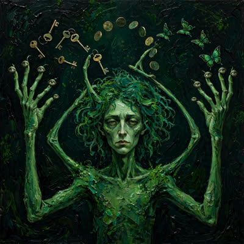

Sire… lihat perbedaan kostum di dua panggung ini! Di panggung Threads, ia berdiri di bawah lampu sorot dengan dada membusung: "Mac gabisa main game Windows? done ✅ Gw open source gratis cara paling seamless!" — seolah-olah ia sendiri yang menempa besinya di ruang bawah tanah. Tapi begitu sang empu keris datang mengetuk pintu GitHub-nya, mendadak suaranya berubah menjadi pelayan istana yang paling santun, membungkuk tiga kali di setiap paragraf sambil tetap mengantongi barangnya! Sandiwara dua babak yang luar biasa!
Chill. Kalau kamu mau tahu seperti apa rasanya seorang mekanik yang melihat mesin rakitannya dicopot, dicat ulang, lalu dipamerkan di panggung orang lain, baca nomor 79 ini pelan-pelan.
Seluruh alasan kenapa MacBook hari ini bisa menjalankan gim Windows itu bertumpu pada satu penyangga: CodeWeavers yang menggaji para insinyur untuk menulis ribuan baris kode ke dalam Wine dari uang jualan lisensi CrossOver. Pembuat NotProton sengaja mengunci alatnya supaya hanya jalan di atas CrossOver — bukan karena dia pelit, tapi karena dia tahu kalau pipa pendapatan CodeWeavers dipotong oleh bungkus gratisan, mesin utamanya bakal mati kelaparan. Persis alasan yang sama kenapa pembuat Whisky dulu memilih membubarkan proyeknya sendiri.
Lalu datang seseorang mem-fork repositori itu, mencomot dua Pull Request yang bahkan belum selesai dikerjakan pembuat aslinya, menempelkan antarmuka baru dan halaman pemasaran `.dev`, lalu berteriak di media sosial seolah baru saja menemukan api. Begitu pemilik aslinya datang menempel label bug berjudul "This should not exist", jawabannya cuma: terima kasih masukannya, saya taruh nama kalian di catatan kaki, lalu tombol Close as completed ditekan.
This should not exist. · Issue #79 · raymondchins/Bridgeplay
Pembuat asli NotProton membuka issue di repositori Bridgeplay milik Raymond Chin, menegur bahwa fork gratisan tersebut merusak keberlangsungan CodeWeavers dan proyek Wine di macOS.
github.com
